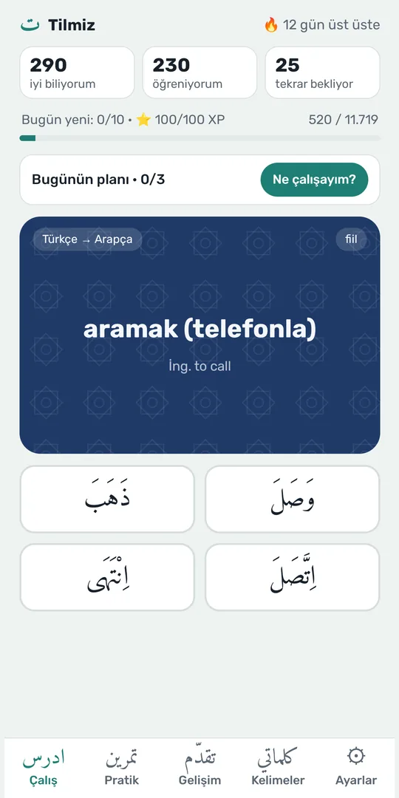
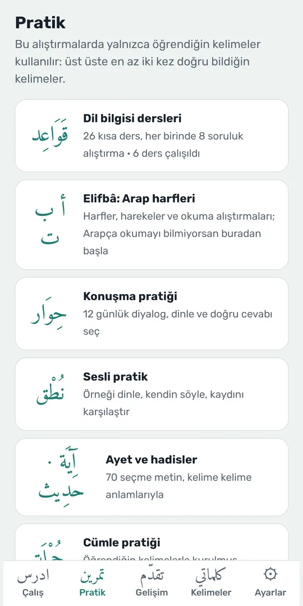
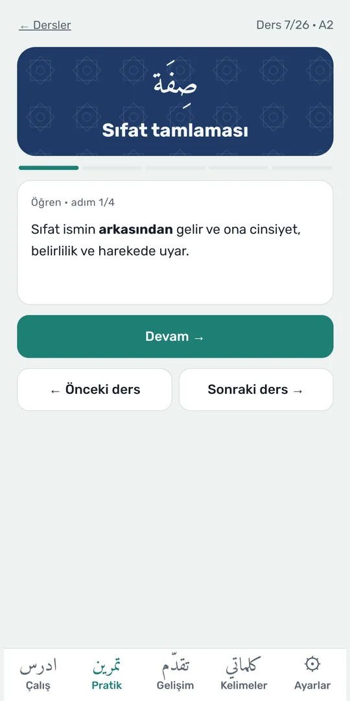
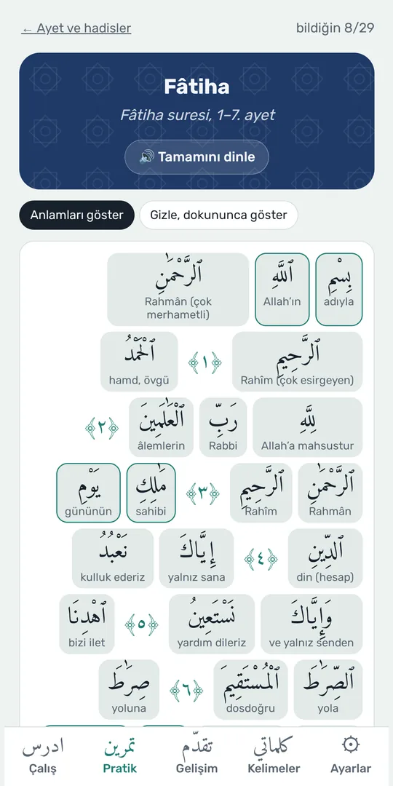
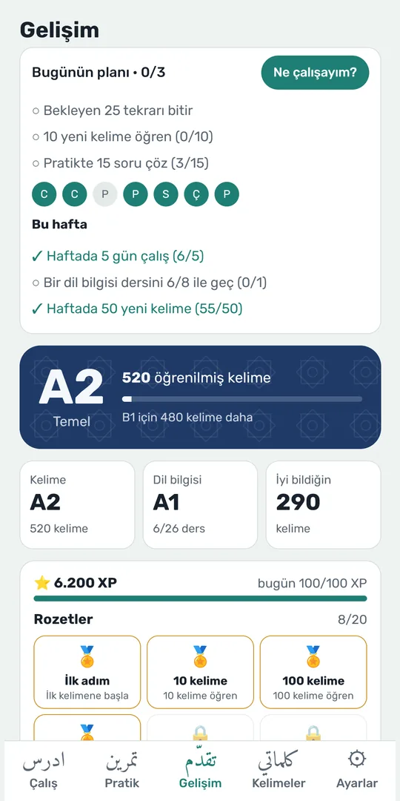

تِلْمِيذ{{APP_NAME}} ile Arapça öğren
Türkçe konuşanlar için ücretsiz, reklamsız bir Arapça öğrenme uygulaması. Her gün birkaç kelime, kısa dil bilgisi dersleri ve ayet-hadis okuma pratiği.

Neler var?
Alfabeden başlayıp Kur’an ve günlük dil metinlerini okuyabilecek seviyeye kadar.
11.700+ kelime
Sık kullanılandan seyreğe sıralı. Türkçe anlamların hepsi elle yazıldı ya da tek tek kontrol edildi.
Aralıklı tekrar
Bilemediğin kelimeler sık, bildiklerin seyrek sorulur; unutmadan ilerlersin.
Elifbâ
Harfler, harekeler ve okuma alıştırmalarıyla sıfırdan başlayanlar için.
26 dil bilgisi dersi
A1’den C2’ye adım adım anlatım; alıştırmalarda yalnızca öğrendiğin kelimeler kullanılır.
Ayet ve hadisler
Kelime kelime anlamlarıyla; mealler güvenilir kaynaklardan, kaynağı belirtilerek.
Diyalog ve sesli pratik
Günlük diyaloglar, fiil çekimleri ve kendi sesini örnekle karşılaştırarak telaffuz.
Ekranlar
Telefonda uygulama gibi çalışır; ana ekrana eklenebilir, internet olmadan da açılır.




İlkelerimiz
Öğrenme uygulaması öğrenmeye hizmet etmeli; dikkatini satmaya değil.
Verilerin sende kalır
İlerlemen yalnızca cihazında saklanır. Hesap açmana gerek yok; hiçbir kişisel veri toplanmaz. Gizlilik politikası
Tamamen ücretsiz
Reklam, abonelik ya da kilitli içerik yok. Bütün bölümler herkese açık.
Açık kaynak
Kaynak kodu GPL-3.0 lisansıyla GitHub’da. Hata bulursan bildirebilir, katkı verebilirsin.
Kaynakları belli
Kelime verileri Vikisözlük, Kur’an verisi Quranic Arabic Corpus, mealler QuranEnc ve HadeethEnc’ten; hepsi uygulamada belirtilir.
Nasıl başlarım?
Kurulum ya da hesap gerekmez; telefonda ya da bilgisayarda tarayıcıdan açman yeter.
- Harfleri tanımıyorsan Pratik → Elifbâ bölümünden başla: harfler, harekeler ve kısa okuma alıştırmaları.
- Her gün birkaç yeni kelime öğren. Uygulama bilemediklerini sık, bildiklerini seyrek sorar; günde 10–15 dakika yeterli.
- Kelimeler biriktikçe dil bilgisi dersleri ve ayet-hadis metinleri “hazır” olur. Kelimelerinin çoğunu bildiğin metinleri kendin okursun.
- Telefonda uygulama gibi kullanmak için tarayıcı menüsünden “Ana ekrana ekle”yi seç; internet olmadan da çalışır.
Sık sorulan sorular
{{FAQ_HTML}}Destek ol
{{APP_NAME}} ücretsiz kalacak. Geliştirmeye katkı vermek istersen buradan destek olabilirsin; bağış hiçbir içeriği açmaz ya da kapatmaz.